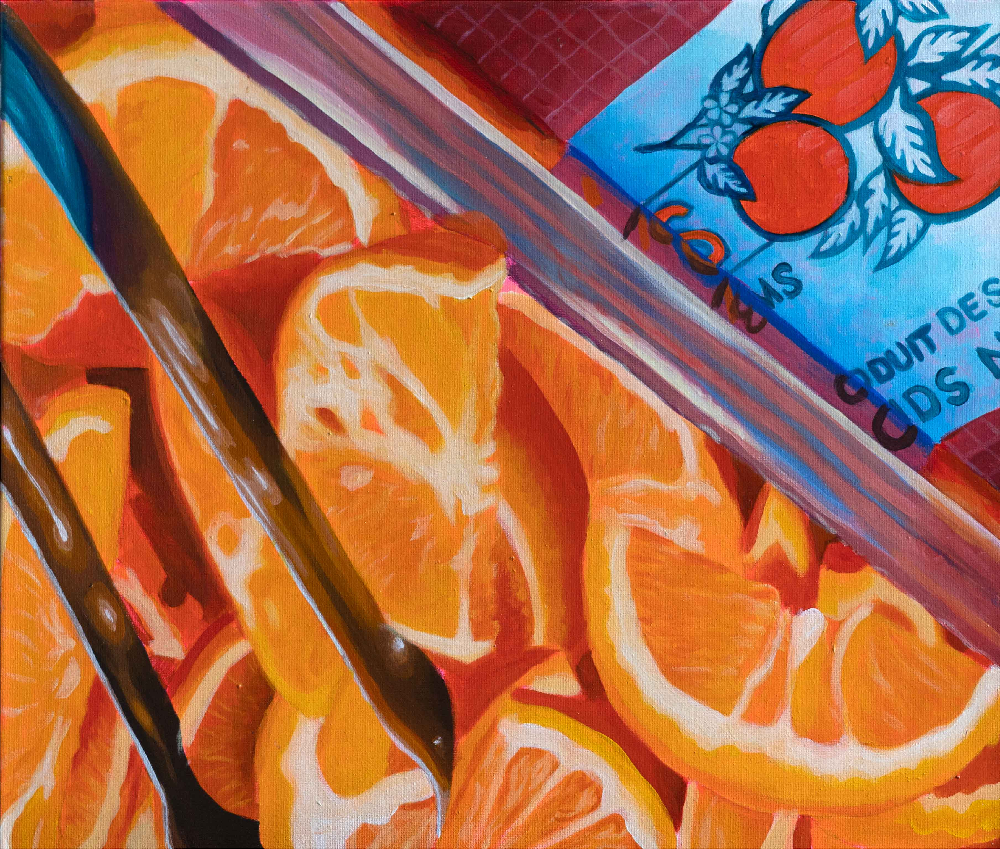
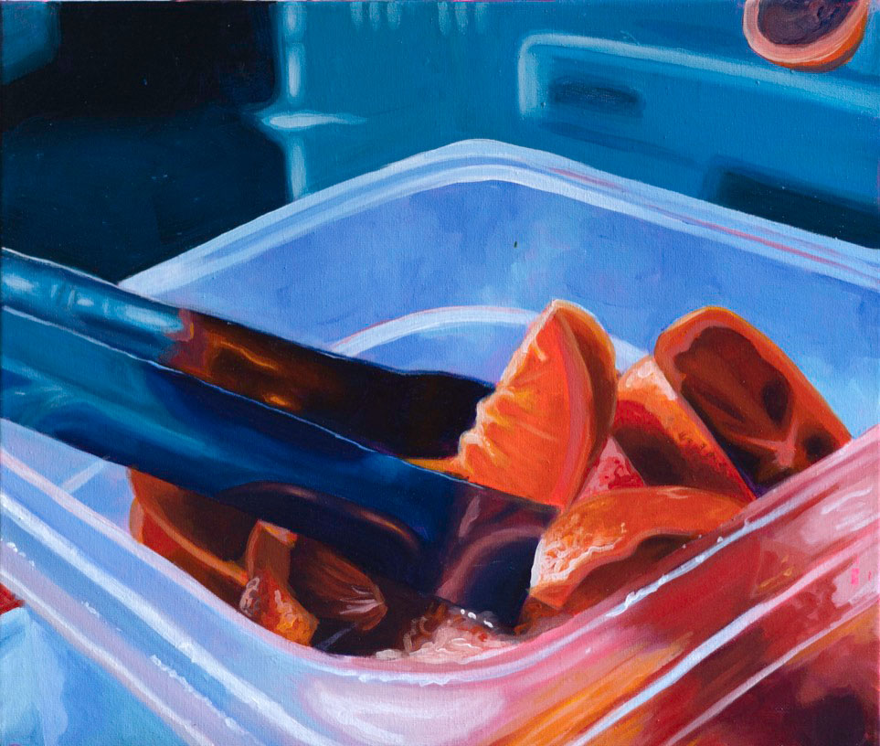
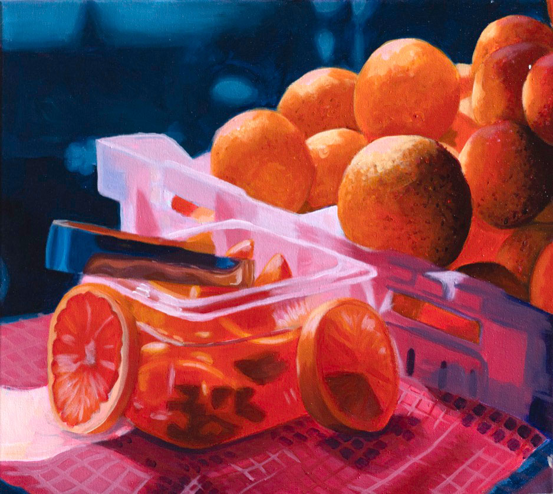

The practice of painting is a rich and multifaceted artistic endeavor that has captivated the human imagination for centuries. It encompasses a wide range of techniques, styles, and approaches, making it a dynamic and ever-evolving art form. The process of painting typically begins with the selection of a surface, such as canvas, paper, wood, or even walls, followed by the choice of paint mediums, including oil, acrylic, watercolor, or tempera. Artists also gather an array of brushes, palette knives, and other tools to apply the pigments to the chosen surface.

The act of painting involves a delicate balance between technical skill and creative expression. Artists must understand the principles of color theory, composition, and perspective to create harmonious and visually engaging works. They use brushwork and various application techniques to manipulate the texture and tone of the painting, adding depth and dimension to their subject matter. The layering of colors and the mastery of blending techniques are key elements in achieving desired effects, from realism to abstraction.

The practice of painting can be a deeply introspective and emotionally charged process. It allows artists to channel their thoughts, feelings, and experiences onto the canvas, creating a visual language that speaks to the viewer's senses. It demands patience and dedication as artists often revisit their work, making adjustments and refinements, seeking perfection or embracing the imperfections that lend character and authenticity to their creations. The act of painting is a journey of self-discovery and a means of connecting with an audience, making it a timeless and enduring art form that continues to evolve with each stroke of the brush.